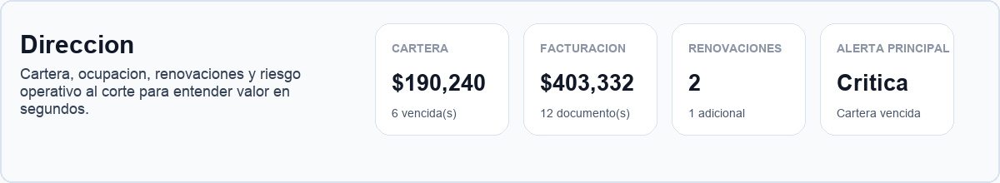
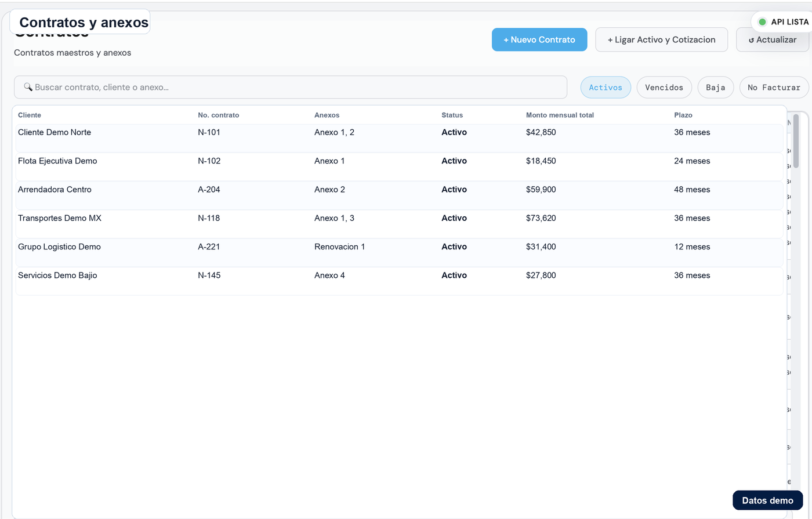
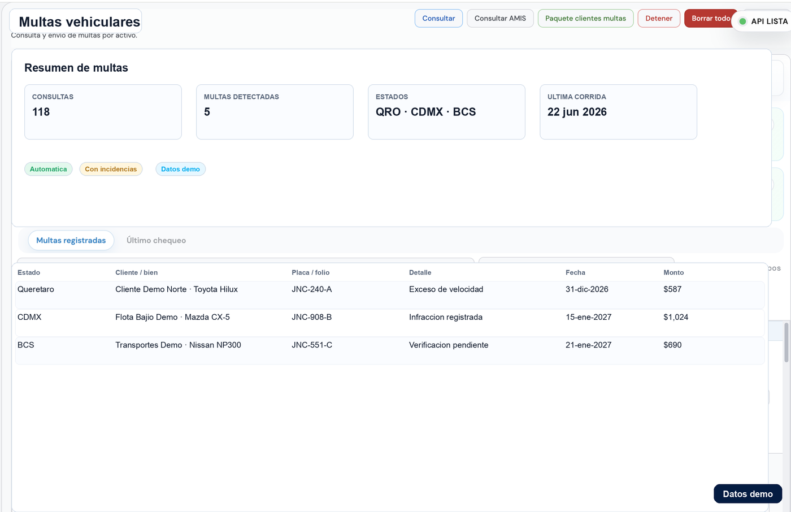
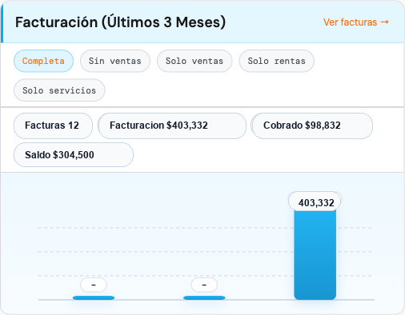

¿Cómo comparo dos proveedores de software?
Usa los mismos casos y datos de ejemplo. Registra por separado lo demostrado, lo pendiente y lo no cubierto, y confirma alcance, costo y responsables de implementación.
Elegir un sistema para una arrendadora exige comprobar cómo resuelve casos reales, cuánto trabajo requiere ponerlo en marcha y qué evidencia deja. Usa esta matriz para comparar proveedores con el mismo criterio.
Empieza con tres casos de tu operación y pide a cada proveedor recorrerlos de principio a fin. Usa los mismos datos de ejemplo y registra qué se resolvió, qué requiere configuración y qué implicaría desarrollo adicional. Así puedes comparar una demo convincente con una implementación que puedas sostener.
| Criterio | Prueba que debes pedir | Evidencia útil |
|---|---|---|
| Trazabilidad | Pasar de una cotización a contrato, anexo y activo. | Identificadores relacionados y documentos visibles, sin recapturar el contexto. |
| Control de cambios | Corregir un dato y consultar quién lo cambió. | Responsable, fecha, autorización e historial de cambios relevantes. |
| Cartera y pagos | Mostrar una renta vencida, un pago parcial y su saldo. | Detalle del cálculo, documento de origen y aplicación del pago. |
| Permisos | Intentar una acción con un usuario que no debe autorizarla. | La operación se restringe y se identifica quién sí puede aprobarla. |
| Migración | Importar una muestra controlada y revisar diferencias. | Registros aceptados, rechazados y conciliación contra el origen. |
| Salida de datos | Exportar contratos, cartera y documentos necesarios. | Formato utilizable, alcance de la exportación y condiciones de acceso. |
Asigna prioridad alta, media o baja a cada criterio según tu negocio. Marca cada respuesta como demostrado, pendiente o no cubierto. No conviertas una promesa comercial en una función disponible: solicita alcance y fechas por escrito cuando algo aún no exista.
Google y los compradores necesitan evidencia. Estas capturas muestran el tipo de flujo que Janco resuelve para arrendamiento puro: dirección, contratos, multas y cobranza.




Define quién prepara clientes, contratos, activos y saldos; cómo se detectan duplicados y quién aprueba la carga. Una importación terminada no equivale a saldos conciliados.
Pregunta qué se conecta de forma estándar, qué credenciales requiere cada servicio y cómo se atienden errores. Solicita una prueba controlada antes de depender del flujo.
Separa licencia, puesta en marcha, migración, capacitación y desarrollos. Confirma horarios, canales de soporte y quién responde durante el arranque.
Acuerda los casos que deben funcionar para dar por listo el arranque, la revisión de diferencias y el plan si un flujo crítico todavía no está preparado.
La guía te ayuda a elegir qué comparar; el checklist de demo te permite registrar la evidencia de cada prueba. Para evaluar a Janco, pide un recorrido de esos mismos casos y confirma el alcance de la propuesta para tu operación.
Usa los mismos casos y datos de ejemplo. Registra por separado lo demostrado, lo pendiente y lo no cubierto, y confirma alcance, costo y responsables de implementación.
Pide pruebas de trazabilidad, pagos parciales, permisos, migración y exportación. Cada resultado debe tener evidencia que puedas revisar después de la demo.
Solicita un recorrido de tus casos prioritarios con datos de ejemplo y confirma qué funciones, integraciones y configuración incluye la propuesta para tu operación.
La demo puede revisar cliente, contrato, activo, cobranza y reporte para ver si el sistema encaja con tu arrendadora.
La propuesta final depende de módulos, usuarios, migración, integraciones y alcance.